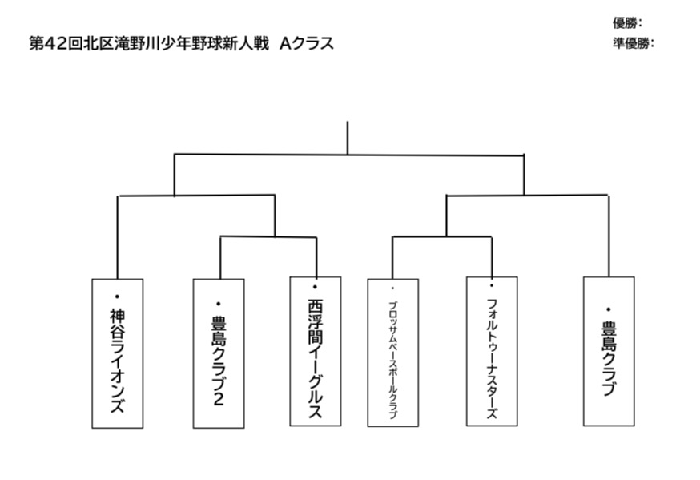
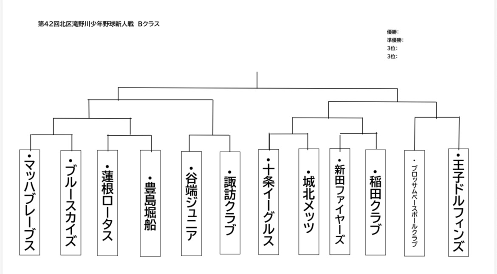
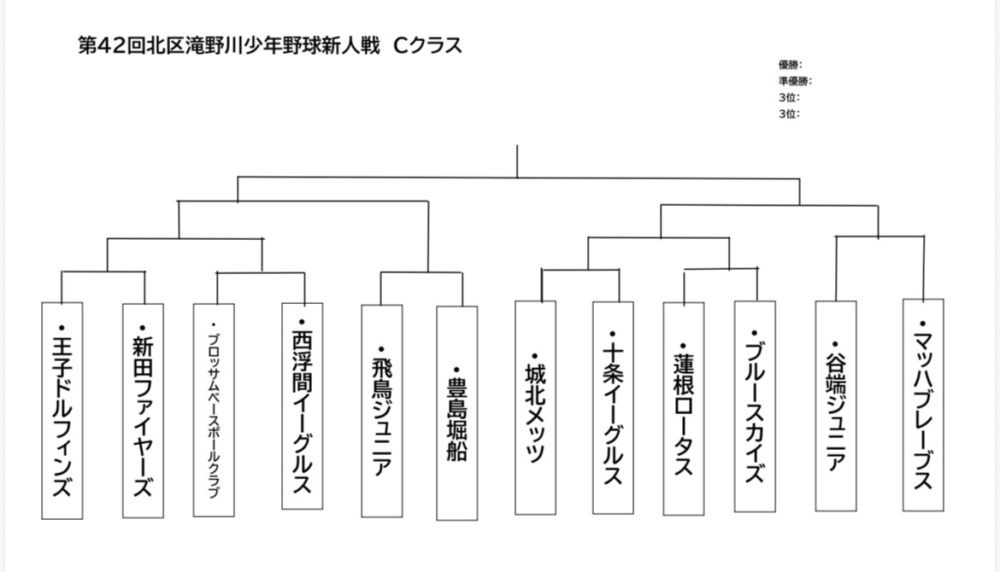
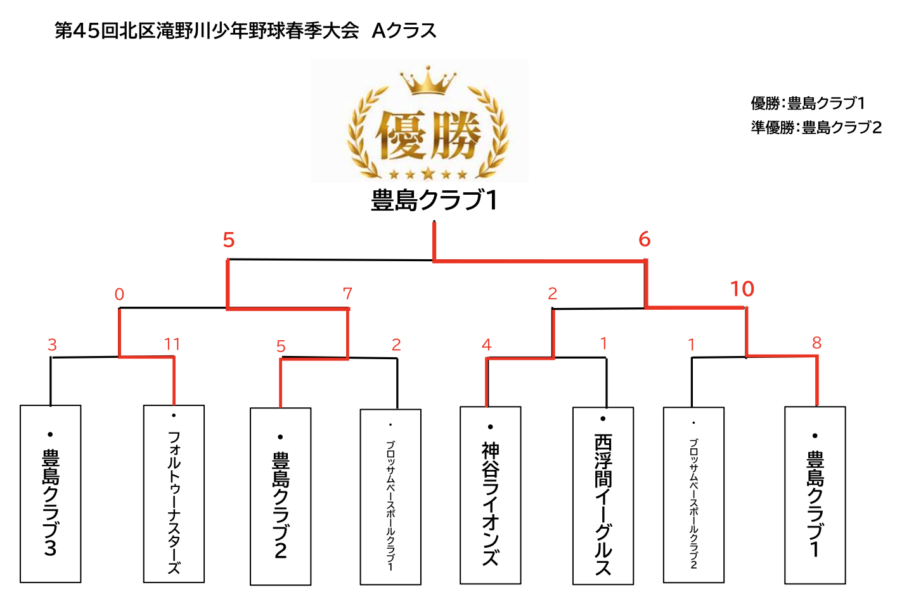
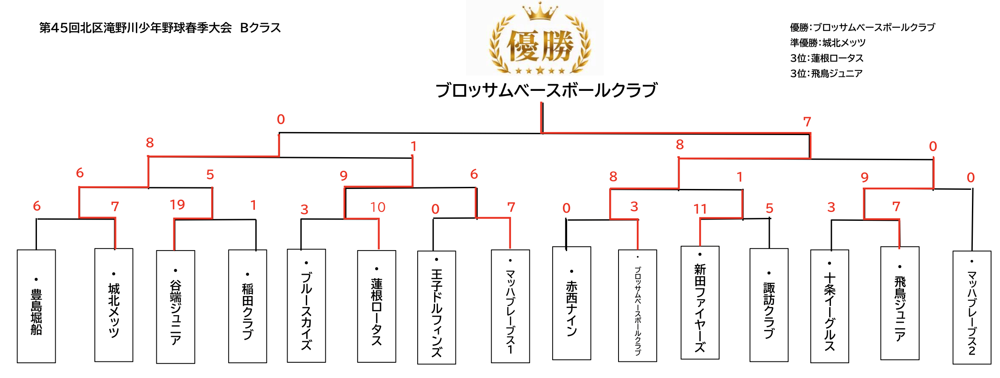
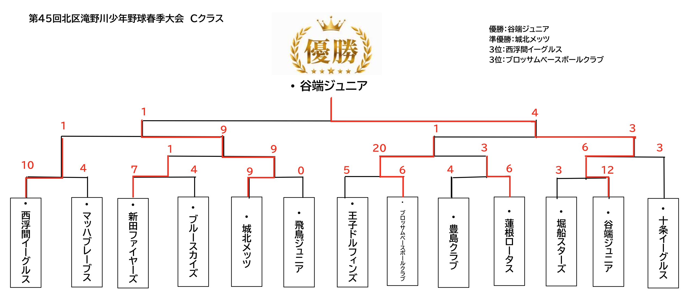

11月21日（土） 試合日程
開会式 中央公園A面
- 13:30受付
- 14:00～開会式（行進賞あり）
中央公園A面
- 15:00Bクラス 蓮根ロータスvs豊島堀船
中央公園B面
- 15:00Bクラス マッハブレーブスvsブルースカイズ
第42回 北区滝野川少年野球大会 新人戦が始まります。日程を見る
第42回 北区滝野川少年野球大会 新人戦が始まります。
試合なし
画像をタップすると拡大します。

拡大
拡大
拡大※大会が終了しましたので大会結果をトーナメント表に反映させました。
表が画面に収まらないときは、横にスクロールできます。
| クラス | 🥇 優勝 | 🥈 準優勝 | 🥉 3位 |
|---|---|---|---|
| Ａクラス | 豊島クラブⅠ | 豊島クラブⅡ | — |
| Ｂクラス | ブロッサムBC | 城北メッツ | 蓮根ロータス／飛鳥ジュニア |
| Ｃクラス | 谷端ジュニア | 城北メッツ | 西浮間イーグルス／ブロッサムBC |
画像をタップすると、得点まで読める大きさに拡大します。

拡大
拡大
拡大表が画面に収まらないときは、横にスクロールできます。
| クラス | 🥇 優勝 | 🥈 準優勝 | 🥉 3位 |
|---|---|---|---|
| Ａクラス | 豊島クラブⅠ | 豊島クラブⅡ | — |
| Ｂクラス | 谷端ジュニア | ブロッサムＢＣ | 新田ファイヤーズ ／ 城北メッツ |
| Ｃクラス | 城北メッツ | 十条イーグルス | 西浮間イーグルス ／ ブロッサムＢＣ |
決勝戦
豊島クラブⅠ 〇 — ● 豊島クラブⅡ
決勝戦
谷端ジュニア 〇 — ● ブロッサムＢＣ
準決勝
ブロッサムＢＣ 〇 — ● 城北メッツ
谷端ジュニア 〇 — ● 新田ファイヤーズ
決勝戦
城北メッツ 〇 — ● 十条イーグルス
準決勝
城北メッツ 〇 — ● 西浮間イーグルス
十条イーグルス 〇 — ● ブロッサムＢＣ
表が画面に収まらないときは、横にスクロールできます。
| クラス | 🥇 優勝 | 🥈 準優勝 | 🥉 3位 |
|---|---|---|---|
| Ａクラス | 神谷ライオンズ | 豊島クラブ２ | — |
| Ｂクラス | マッハブレーブス | 諏訪クラブ | 赤西ナイン ／ 谷端ジュニア |
| Ｃクラス | ブルースカイズ | ブロッサムＢＣ | 城北メッツ ／ 新田ファイヤーズ |
決勝戦
神谷ライオンズ 〇 — ● 豊島クラブ２
決勝戦
マッハブレーブス 〇 — ● 諏訪クラブ
準決勝
諏訪クラブ 〇 — ● 谷端ジュニア
マッハブレーブス 〇 — ● 赤西ナイン
決勝戦
ブルースカイズ 〇 — ● ブロッサムＢＣ
準決勝
ブロッサムＢＣ 〇 — ● 新田ファイヤーズ
ブルースカイズ 〇 — ● 城北メッツ